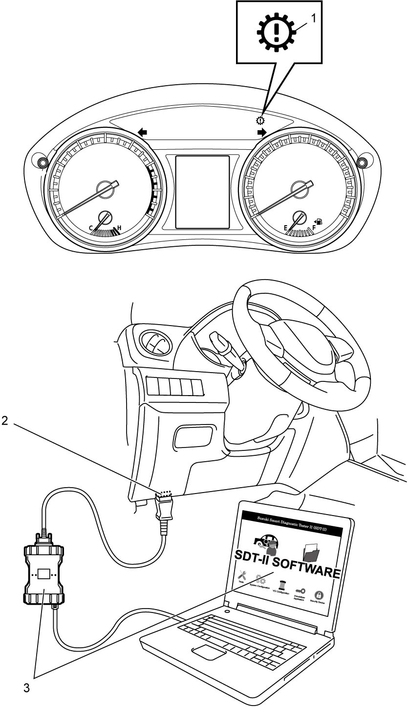

5F
| OBD System Description |
TCM has the following functions.
•When TCM detects a malfunction in twin clutch system, TCM turns on transmission warning light (1) and stores DTC in TCM memory.
•It is possible to communicate with TCM through data link connector (DLC) (2) using SUZUKI scan tool (3). (Diagnostic information can be checked and cleared using SUZUKI scan tool.)
•It is possible to communicate with TCM through data link connector (DLC) (2) using SUZUKI scan tool (3). (Diagnostic information can be checked and cleared using SUZUKI scan tool.)

 "Expand image")
Warm-Up Cycle
A “Warm-Up Cycle” means sufficient vehicle operation such that the coolant temperature has risen by at least 22 °C (40 °F) from engine starting and reaches a minimum temperature of 70 °C (160 °F).
Driving Cycle
A “Driving Cycle” consists of engine startup, driving mode where a malfunction would be detected if present, and engine shutoff.